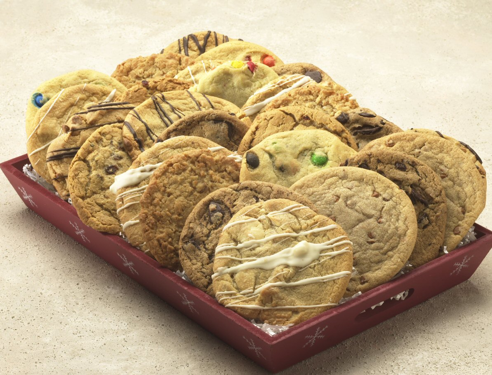
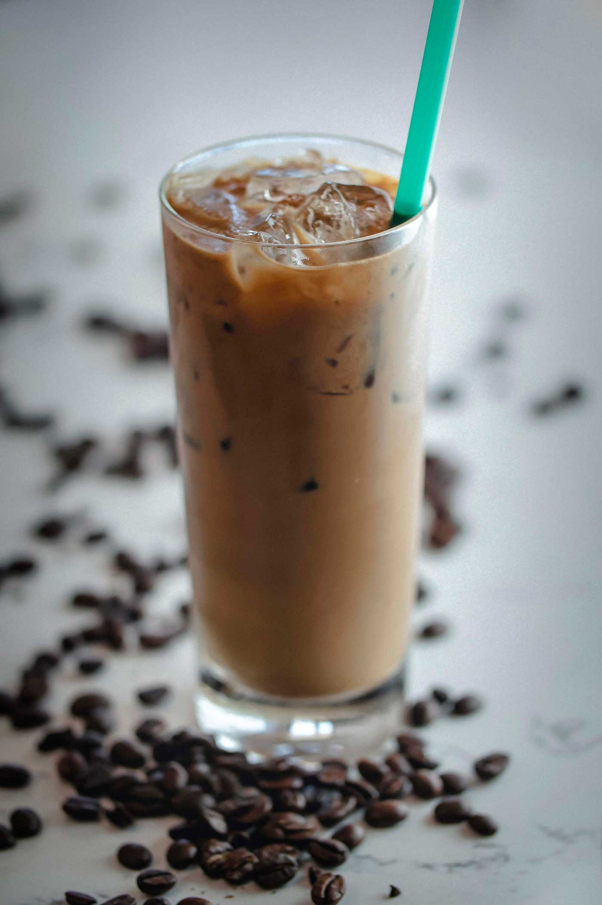
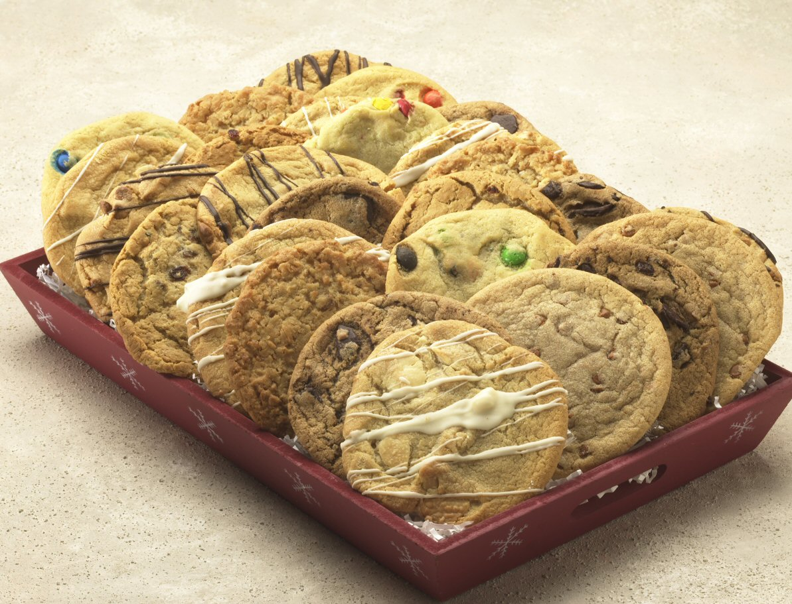
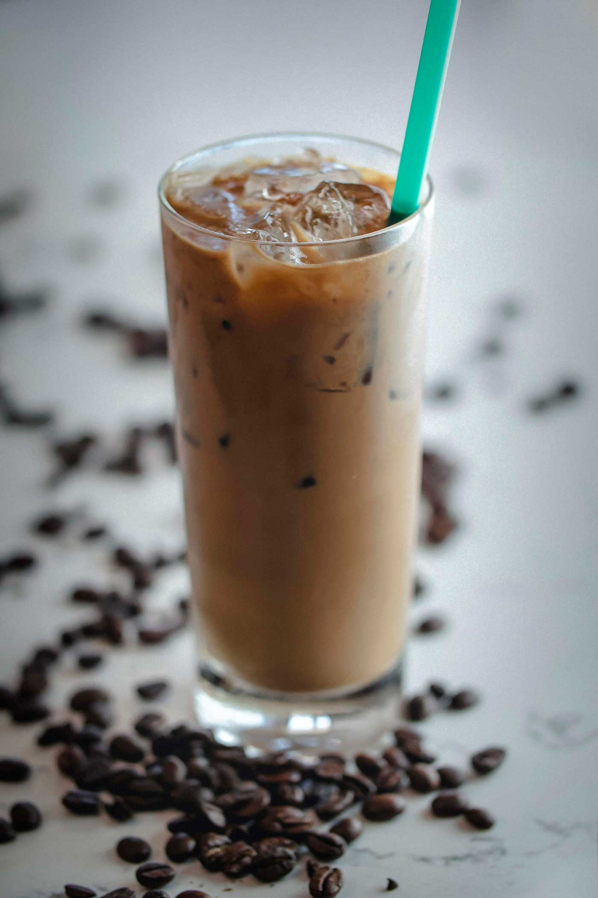

1. Coffee loses caffeine as it is roasted,so a dark,
"bold" cup of coffee actually has less caffeine than a lighter roast.
2. Coffee stays warm 20% longer when you add cream.
3. Coffee beans are technically seeds.
4. Brazil grows the most coffee in the world.
5. Only two U.S. states produce coffee.
6. Coffee drinkers tend to live longer.
7. The largest cup of coffee ever filled a 9-foot tall cup.
8. One cup of black coffee only has one calorie.
9. One can eat coffee cherries as a food.
10. The world's most expensive coffee can cost more than $600 a pound.
 
